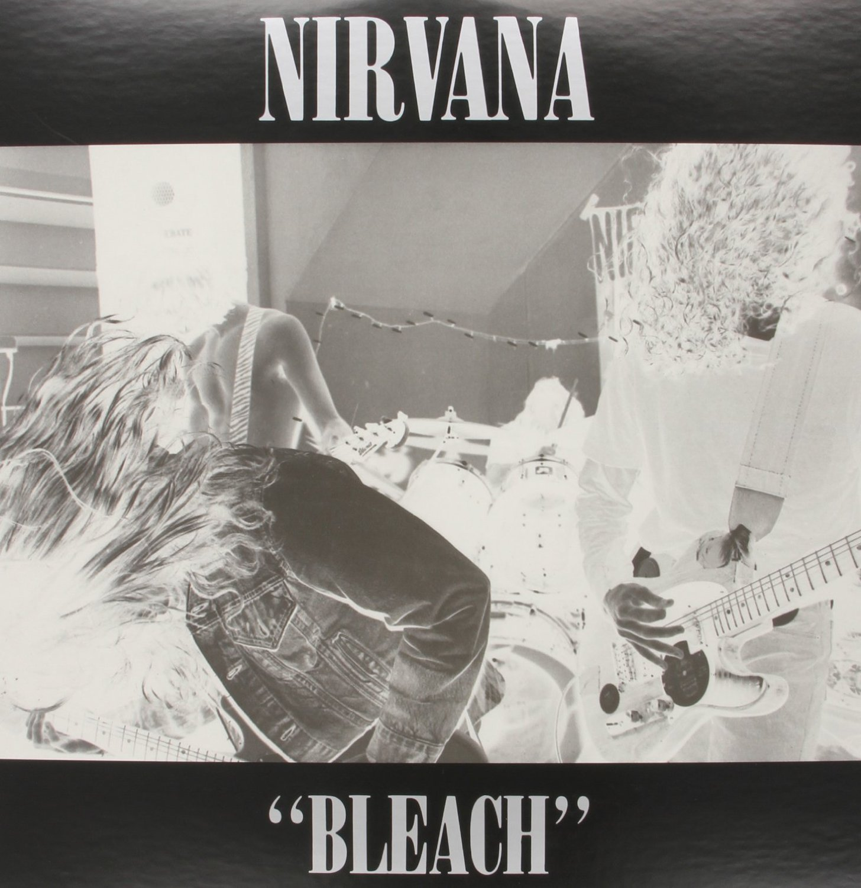

Bleach
Bleach is the debut studio album released on June 15, 1989 by record label Sub Pop. The album was guranteed after the sucess of their hit single, "Love Buzz".
- Blew
- About a Girl
- School
- Love Buzz
- Paper Cuts
Nevermind

Nevermind is the second studio album and was released on September 24, 1991 by DGC Records and produced by Butch Vig, it was the band's first record with drummer Dave Grohl (who would later go on to form the Foo Fighters). The album, along with smash hit single "Smells like Teen Spirit", cemented the band's place in music history.
- Smells like Teen Spirit
- Breed
- Something in the Way
- In Bloom
- Lithium
In Utero

In Utero is the third and final studio album released on September 21, 1993 by DGC Records. A big surprise from the polished production of Nevermind as well as a dark extremity for the band, released before lead singer Kurt Cobain's tragic suicide in 1994.
- All Apologies
- Pennyroyal Tea
- Frances Farmer Will Have Her Revenge on Seattle
- Heart Shaped Box
- Dumb
Live in New York

A live album released on November 1, 1994 by DGC Records. The album features an acoustic performance recorded at Sony Music Studios on November 18, 1993, for the television series MTV Unplugged. To this day, it is touted as one of the greatest live performances in modern music.
- All Apologies
- About a Girl
- Come as You Are
- The Man Who Sold the World
- Polly